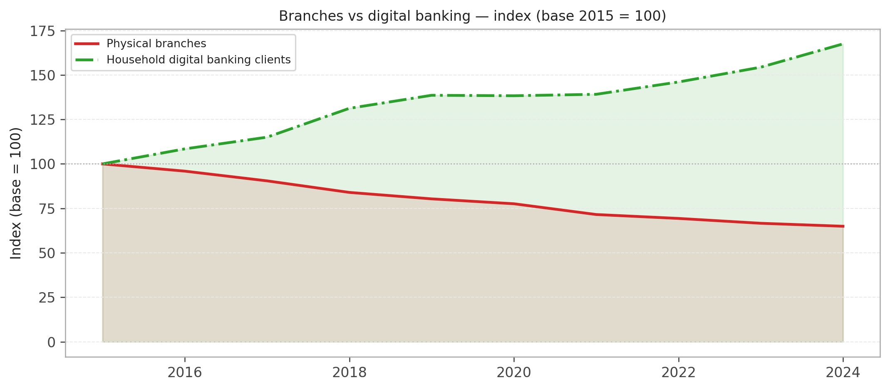
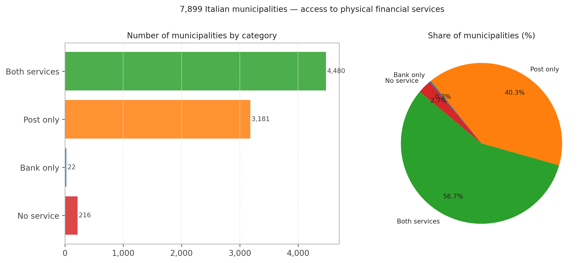
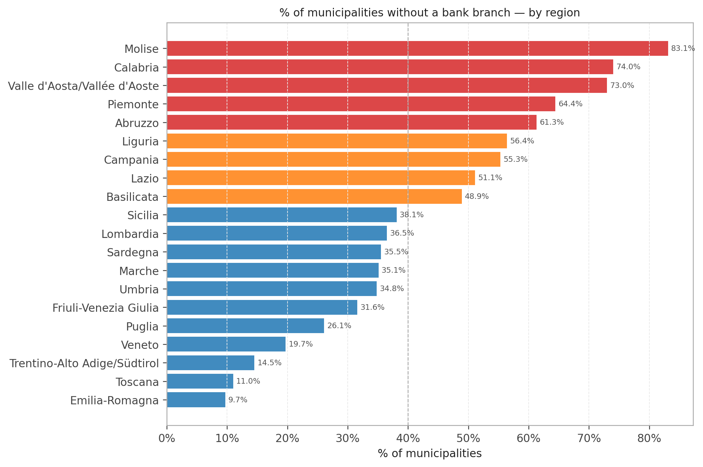
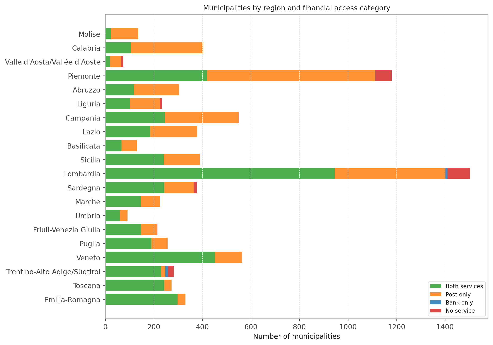
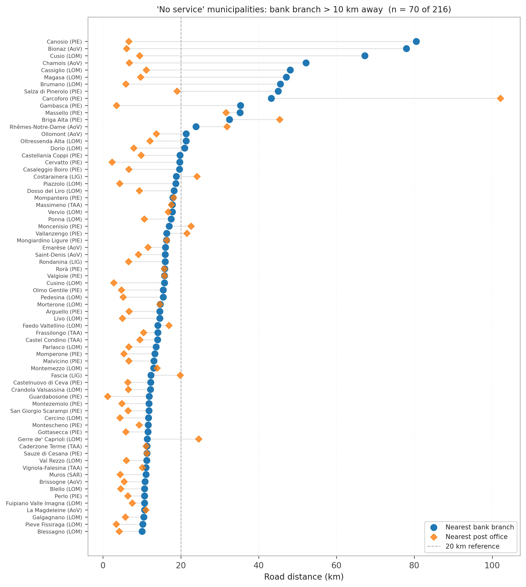
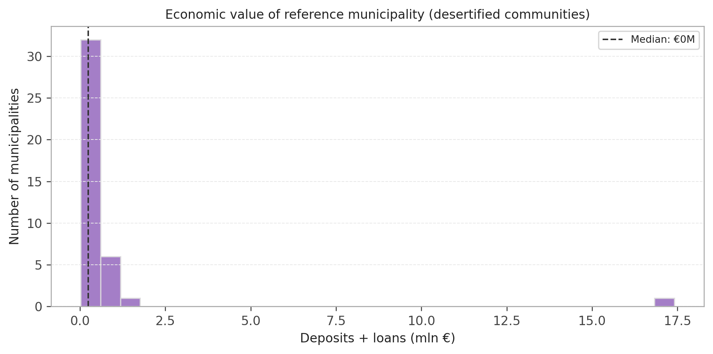
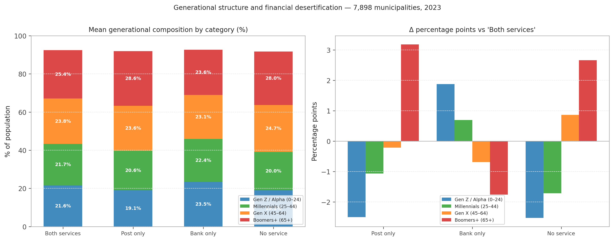
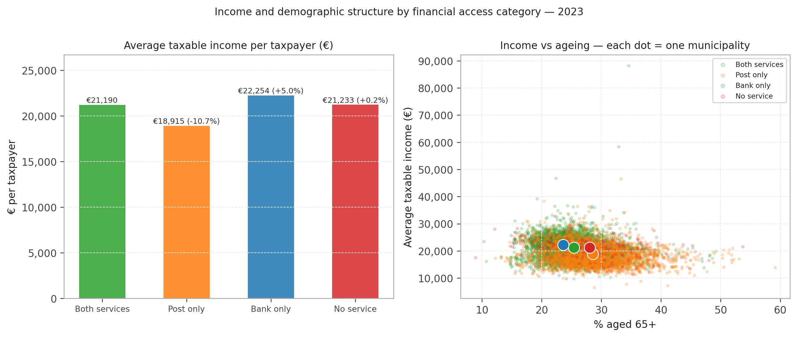
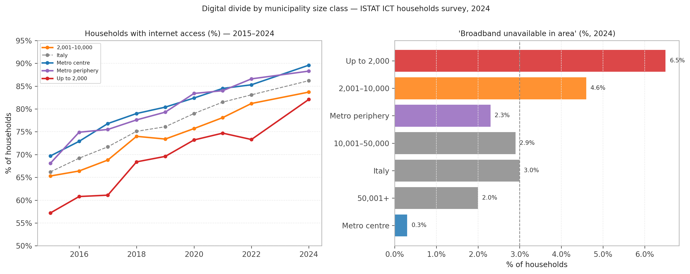
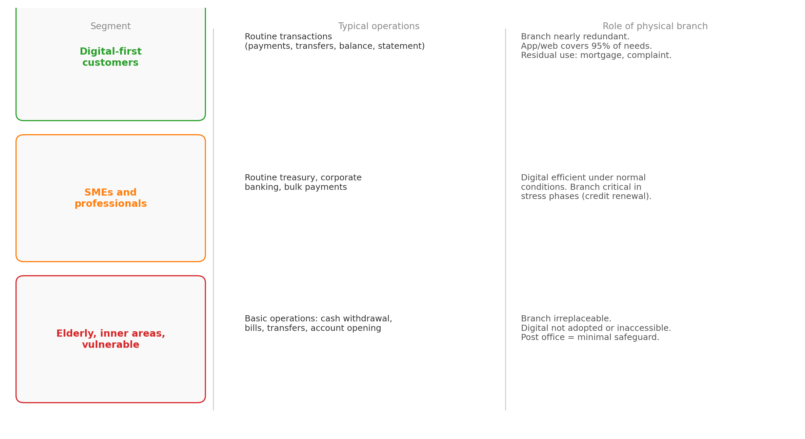

Figure 1: Physical branches and household digital banking clients (HCB) — Italy, 2015–2025 (HCB through 2024). Index base = 2015 = 100. Source: Banca d’Italia (Banca d’Italia 2024a, 2024d).
Branch Closures, Demographic Vulnerability, and the Triple Exclusion Barrier
Paolo Volterra ![]()
In Italy, 40% of municipalities no longer have a bank branch, and in 216 municipalities no physical financial service exists at all. Over the same decade, digital banking adoption has tripled. This paper asks a simple but critical question: is digital banking replacing the branch, or only replacing it for some?
We integrate three datasets — the full census of active bank branches (19,291 branches, 407 banks; GIAVA, Banca d’Italia, March 2026), the mapping of post offices (12,615 offices; Poste Italiane), and municipality-level data on demographics, income, and digital connectivity (ISTAT, 2023–2024) — to construct a four-category taxonomy of financial access across all 7,899 Italian municipalities.
We show that municipalities without bank branches are systematically older (+3.2 pp in the 65+ population), poorer (−11% in average taxable income), and less connected (+6.2 pp broadband unavailability). These factors co-occur and reinforce each other, forming what we define as a triple exclusion barrier.
The results challenge the dominant narrative of digital substitution: online banking does not replace physical access uniformly. It replaces it selectively — benefiting young, urban, and digitally connected populations, while generating financial exclusion in ageing, low-income, and poorly connected territories.
The paper concludes that branch closures do not eliminate access costs, but transfer them to the most vulnerable users, raising critical implications for financial inclusion policy and territorial cohesion.
financial desertification, bank branches, postal services, digital banking, financial inclusion, inner areas, Italy
JEL Classification: G21 · G28 · R51 · I30
Italy’s banking system is undergoing a structural transformation that appears, at first glance, both efficient and inevitable. Physical branches are closing, digital banking is expanding, and cost structures are improving.
But this aggregate narrative conceals a more uncomfortable reality.
In Italy, 40% of municipalities no longer have a bank branch. In 216 municipalities, there is no physical financial service at all. For these communities, banking has not become digital — it has become distant.
The question is therefore not whether digital banking is replacing the branch. The question is for whom this replacement is actually working.
This paper argues that digital substitution is not uniform, but selective. It benefits the young, urban, and digitally connected, while excluding populations that are older, poorer, and less connected. Where physical access disappears and digital adoption is structurally constrained, financial services do not transition — they erode.
Digital banking is not replacing branches. It is replacing them selectively.
Over the past decade, Italy’s banking network has contracted dramatically. Between 2015 and 2024, the number of active bank branches declined from approximately 30,000 to under 19,300 — a reduction of more than one-third. This contraction has been driven by three convergent forces: sustained cost pressure following post-crisis consolidation, rapid expansion of digital banking reducing in-branch transactions, and mergers and acquisitions eliminating network overlaps. Over the same period, the number of Italian households using home banking has tripled.
A growing literature documents the real-economy consequences of branch closures. Physical proximity matters for small business lending because soft information — borrower quality, local conditions, relationship history — is difficult to transmit at distance. For households, the branch has historically functioned as an onboarding interface, particularly for individuals with limited financial or digital literacy.
When branches close, digitally capable users transition efficiently to online channels. Others do not. They face a structural access constraint that digital banking cannot resolve.
This paper contributes to the debate by constructing a comprehensive, municipality-level map of financial access across all 7,899 Italian municipalities. By integrating bank branch data, postal network coverage, and socio-economic indicators, we identify a systematic pattern of exclusion.
We introduce the concept of a triple exclusion barrier: the joint condition of (i) absence of physical financial infrastructure, (ii) demographic structure with low digital propensity, and (iii) inadequate digital connectivity. These three dimensions do not occur independently. They co-occur, reinforce each other, and concentrate in the same territories.
The remainder of the paper is structured as follows. Section 2 describes the data and methodology. Section 3 documents the macro trend in branch closures. Section 4 maps financial desertification across municipalities. Section 5 analyses the extreme case of municipalities with no service. Section 6 examines the economic dimension. Section 7 focuses on demographics and income. Section 8 addresses digital connectivity. Section 9 proposes a segmented interpretation of branch utility. Section 10 concludes with policy implications.
The primary source for bank branch locations is the GIAVA register maintained by Banca d’Italia (Gestione degli Intermediari, Albi e Vigilanza), the official register of supervised financial intermediaries. We use the extraction dated 27 March 2026, covering 19,291 active branches belonging to 407 distinct banking institutions. A branch is classified as active if its recorded operational end date is open-ended (9999-12-31).
Post office locations are sourced from the Poste Italiane public API queried in March 2026 and covering 12,615 active postal outlets.
Macro-level time series are obtained from Banca d’Italia’s public statistical releases: TDB20207 (branches by institutional group and NUTS2, annual); TDB20220 (branches per 100,000 inhabitants by NUTS2, annual); TSPAG120 (digital banking clients by sector, annual).
Municipality-level population data by five-year age cohort are obtained from the ISTAT SDMX REST API (dataflow DF_DCSS_POP_DEMCITMIG_TV_1, reference year 2023). Taxable income data (IRPEF) come from the same SDMX interface (dataflow 30_1008, reference year 2023; original source: Ministry of Economy and Finance). We compute the 65+ population share and average taxable income per taxpayer for each municipality.
ICT adoption data are drawn from ISTAT’s annual household survey (dataflow 60_130_DF_DCCV_ICT_2, 2015–2024), using two indicators: share of households with internet access and share reporting broadband unavailability in their area, by municipality size class.
Each municipality is assigned to one of four mutually exclusive categories:
| Category | Bank branch | Post office |
|---|---|---|
| Both services | ✓ | ✓ |
| Post only | ✗ | ✓ |
| Bank only | ✓ | ✗ |
| No service | ✗ | ✗ |
Financial desertification is defined as the absence of a bank branch (categories Post only and No service), affecting 44% of municipalities in aggregate.
In ten years Italy’s banking system has systematically contracted its physical network. From 2015 to 2024 more than 10,000 branches closed — the result of cost pressure, digital substitution, and consolidation-driven network rationalisation. Over the same period, home banking clients grew by a factor of three or more.

Figure 1: Physical branches and household digital banking clients (HCB) — Italy, 2015–2025 (HCB through 2024). Index base = 2015 = 100. Source: Banca d’Italia (Banca d’Italia 2024a, 2024d).
The two curves diverge continuously and symmetrically, without interruption. The critical insight, however, is what this aggregate picture conceals: digital adoption is not uniform across age groups, geographies, or transaction types. To understand who remains behind the digital curve, analysis must descend to the level of the individual municipality.
Combining the GIAVA branch register with the Poste Italiane outlet mapping, each of Italy’s 7,899 municipalities is assigned to one of four access categories.
| Category | N. municipalities | % municipalities | Bank branch | Post office |
|---|---|---|---|---|
| Both services | 4,480 | 56.7% | ✓ | ✓ |
| Post only | 3,181 | 40.3% | ✗ | ✓ |
| Bank only | 22 | 0.3% | ✓ | ✗ |
| No service | 216 | 2.7% | ✗ | ✗ |
Table 1: Italian municipalities by presence of bank branches and post offices. Source: GIAVA Banca d’Italia (Banca d’Italia 2026), Poste Italiane (Poste Italiane S.p.A. 2026), authors’ elaborations.

Figure 2: Distribution of 7,899 Italian municipalities by financial access category. Source: authors’ elaborations on GIAVA (Banca d’Italia 2026) and Poste Italiane (Poste Italiane S.p.A. 2026).
The figures are more severe than public debate typically acknowledges. 40% of Italian municipalities no longer have a bank branch: 3,181 municipalities (40.3%) retain a post office as their only physical financial presence. A further 216 municipalities have neither a bank nor a post office. In total, more than 3,400 municipalities — nearly 44% — have reduced or absent physical financial access.

Figure 3: Share of municipalities without a bank branch by region (%). Includes ‘Post only’ and ‘No service’ categories. Source: authors’ elaborations.
The geographic distribution reveals a structural asymmetry. The regions with the highest share of municipalities without a bank branch are not exclusively southern: they include Valle d’Aosta, Molise, and Basilicata, but also Lombardia and Piemonte by virtue of their large number of small Alpine municipalities. Financial desertification is fundamentally a low population density phenomenon, not a north-south divide.

Figure 4: Municipalities by region and financial access category. Source: authors’ elaborations.
The 216 municipalities classified as No service represent the most extreme case: no bank branch and no post office. For their residents, any financial operation — a payment, a cash withdrawal, delivery of registered mail — requires travel to a neighbouring municipality.
| Service | Median (km) | Mean (km) | Max (km) | > 10 km (n) | > 20 km (n) |
|---|---|---|---|---|---|
| Nearest post office | 5.0 | 7.1 | 102.1 | 34 | 8 |
| Nearest bank branch | 7.1 | 10.3 | 80.5 | 70 | 16 |
Table 2: Road distance to the nearest bank branch and post office for the 216 ‘No service’ municipalities (km). Source: authors’ elaborations.

Figure 5: Road distance (km) to the nearest bank branch and post office for the 70 ‘No service’ municipalities where the nearest branch exceeds 10 km (of 216 total). Sorted by bank distance. Source: authors’ elaborations.
For most of the 216 municipalities without any financial service, road distances to the nearest provider are modest (median: 6.9 km to the nearest bank branch, 5.2 km to the nearest post office). The access problem is therefore not primarily a matter of extreme physical remoteness for the majority.
However, 70 municipalities (32% of the total) are more than 10 km from the nearest bank branch, and 17 exceed 20 km. A striking geographic pattern emerges: the most severely isolated communities are concentrated in Alpine northern Italy — Piedmont, Lombardy, and Valle d’Aosta — rather than in the South. The most extreme cases (Canosio in Piedmont at 80.5 km, Bionaz in Valle d’Aosta at 78 km, Cusio in Lombardy at 67 km) are mountain municipalities where terrain, seasonal road conditions, and sparse public transport compound the distance barrier.
This finding carries an important implication: the severity of access deprivation, when measured by physical distance, is not co-located with the demographic and income vulnerability documented in the previous section. Extreme isolation and socioeconomic fragility affect different types of communities and call for different policy responses.
One way to measure the stakes is to estimate the volume of deposits and loans in municipalities near the 216 No service communities. Direct data are unavailable at this granularity (Banca d’Italia’s TFR10194 series aggregates at the branch level), but the economic weight of the nearest reference centres provides an approximation.

Figure 6: Distribution of economic value (deposits + loans, mln €) for the reference municipality of each of the 216 ‘No service’ communities. Source: authors’ elaborations on Banca d’Italia TFR10194 (Banca d’Italia 2024c).
Reference centres are in most cases small towns with modest financial volumes. The damage from desertification is therefore primarily an access cost — time, transport, foregone transactions — borne by the least mobile residents, rather than a directly measurable reduction in lending volumes.
The demographic structure of financially desertified areas reveals a double generational effect that is directly relevant to the feasibility of digital substitution.

Figure 7: Generational structure by financial access category (2023, % of resident population). Source: ISTAT (ISTAT 2023a), authors’ elaborations.
Post only and No service municipalities are not only home to more Boomers+ (28.6% and 28.0% vs 25.4% in fully-served municipalities), but also to fewer young people: the Gen Z/Alpha share falls to 19.1% against 21.6% in fully-served areas (−2.5 pp), and Millennials to 20.6% vs 21.7% (−1.1 pp). This is the classic demographic profile of areas experiencing decline and depopulation: younger cohorts leave; older residents stay.
This dual pattern has direct implications for digital transition. The population cohorts that could drive digital adoption (Gen Z, Millennials) are under-represented; those with the lowest propensity for digital uptake (Boomers+) are over-represented. Digital substitution finds fertile ground precisely where it is least urgently needed, and arid ground where it would be most necessary.

Figure 8: Average taxable income per taxpayer (€, 2023) and 65+ share by financial access category. Source: ISTAT (ISTAT 2023b, 2023a), authors’ elaborations.
The income data reinforces the demographic picture. Post only municipalities — already the most elderly — are also the poorest: average taxable income per taxpayer is €18,915, approximately €2,300 below (−11%) fully-served municipalities. The scatter plot confirms the correlation: as the 65+ share rises, average income tends to fall, and Post only communities (orange) cluster in the upper-left quadrant — high ageing, low income. These are precisely the conditions that make digital substitution structurally impracticable.
Branch closure and unfavourable demographics are compounded by a third factor: broadband coverage. If digital banking is the proposed substitute for the physical branch, its practicability depends on the existence of adequate connectivity. ISTAT data on internet access by municipality size class (household survey, 2015–2024) reveal a structural and persistent gap between small municipalities and metropolitan areas.

Figure 9: Households with internet access and share reporting ‘broadband unavailable in their area’, by municipality size class (2015–2024). Source: ISTAT ICT household survey (ISTAT 2024), authors’ elaborations.
In 2024, in municipalities up to 2,000 inhabitants — the class hosting the largest share of desertified communities — only 82.1% of households have internet access, versus 89.6% in metropolitan centres (−7.5 percentage points). More critically, 6.5% of households in these small municipalities declare that broadband is simply not available in their area: more than double the national average (3.0%) and more than twenty times the metropolitan figure (0.3%).
This third element closes the picture of the triple exclusion barrier: absent physical branch, demographic structure with low digital propensity, and insufficient connectivity infrastructure. In this context, proposing digital banking as an automatic substitute for the physical branch is equivalent to proposing air travel as a road alternative in a territory without an airport.
The question “do bank branches still matter?” does not have a binary answer. The response is segmented by client type and by operation type.

Figure 10: Conceptual framework: utility of the physical branch by client segment and operation type.
Answer 1 — Yes, for the bank. Digital banking has almost completely replaced the physical branch for active, young, urban, and digitally connected clients. Banks are rational in closing branches: each closure generates real savings without losing the most profitable customers, who migrate easily to the app. For this segment the physical branch is a legacy.
Answer 2 — Partially, for SMEs. Online corporate banking functions well under normal conditions. The problem arises in stress phases: credit renewal, debt restructuring, opening of new credit lines. These operations still require direct interaction with the relationship manager, because they involve discretion, trust, and the transmission of soft information that the digital channel does not convey effectively.
Answer 3 — No, for the vulnerable. For the elderly, inner-area residents, and those with low financial and digital literacy, the physical branch remains the only real access point to banking services. Its disappearance does not generate accelerated digital adoption — it generates exclusion. The postal safeguard mitigates but does not eliminate this risk: 216 Italian municipalities have neither a bank branch nor a post office.
The banking system is transferring to customers a cost that was previously internalised by the bank: the cost of physical access to financial services. For digitalised clients this cost is zero (they access from home). For others it is a real cost — in time, mobility, autonomy — that industry statistics do not measure. Any assessment of the utility of the physical branch must account for who bears this cost and whether they have real alternatives.
Our findings point to four distinct policy levers.
Service obligation. Regulatory frameworks governing branch closure notifications (currently requiring a 90-day advance notice to Banca d’Italia) could be extended to include mandatory assessment of residual service coverage, particularly in municipalities where the bank to be closed is the sole provider.
Postal network as a financial inclusion backstop. Post offices already function as partial financial substitutes in 3,181 municipalities. Extending the range of banking operations available at postal counters — beyond current BancoPosta services — would reduce the access gap without requiring private investment.
Digital infrastructure investment targeting. The 6.5% broadband unavailability rate in the smallest municipalities is not only a digital inclusion problem — it is a financial inclusion problem. Infrastructure investment should be prioritised in municipalities that are simultaneously financially desertified and broadband-deficient.
Monitoring. The four-category taxonomy developed in this paper is replicable annually at low cost from existing public data sources (GIAVA, Poste Italiane API, ISTAT). Annual tracking of category transitions would provide an early warning system for communities at risk of crossing into No service status.
Data sources: Banca d’Italia — TDB20207, TDB20220, TFR10194, TSPAG120 (Banca d’Italia 2024a, 2024b, 2024c, 2024d); GIAVA branch register (Banca d’Italia 2026); Poste Italiane (Poste Italiane S.p.A. 2026); ISTAT — population by age class (ISTAT 2023a), IRPEF income (ISTAT 2023b), ICT households survey (ISTAT 2024); TEHA Group / The European House – Ambrosetti, Community Cashless Society Report 2026 (TEHA Group and The European House – Ambrosetti 2026).
DF_DCSS_POP_DEMCITMIG_TV_1.
30_1008.
60_130_DF_DCCV_ICT_2.
POST /RBUSRestServices/utility/ricercaFiliali.